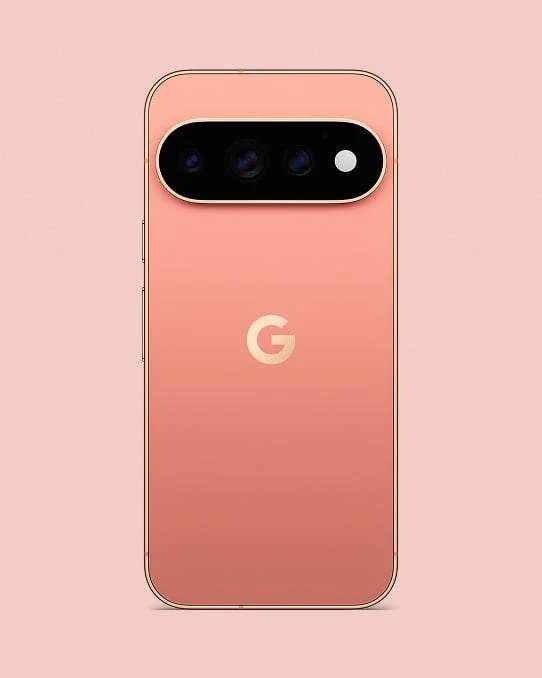
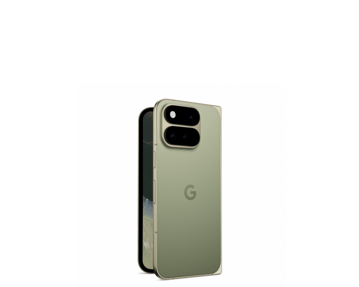

Le Google Pixel 11 fait partie d'une gamme qui comprend également le Pixel 11 Pro, le Pixel 11 Pro XL et le Pixel 11 Pro Fold. Google a présenté cette génération le 12 août 2026, avec des modèles classiques et un modèle pliable.
📱 Les modèles de la gamme
Le Pixel 11 devrait représenter le modèle standard, tandis que les versions Pro visent les utilisateurs qui recherchent un écran plus avancé, un système photo plus complet et davantage de mémoire. Le Pixel 11 Pro XL devrait reprendre l'essentiel des caractéristiques du Pro dans un format plus grand.
- Pixel 11 : modèle standard avec écran d'environ 6,3 pouces.
- Pixel 11 Pro : écran LTPO OLED de 6,3 pouces et triple caméra attendue.
- Pixel 11 Pro XL : version grand format avec les fonctions premium de la gamme.
- Pixel 11 Pro Fold : modèle pliable plus fin et plus léger, avec une nouvelle caméra principale.
📖 Le Pixel 11 Pro Fold
Le Pixel 11 Pro Fold est la version pliable de la gamme. Google met en avant une conception plus fine et plus légère, une charnière sans engrenage, une meilleure résistance et une barre photo équipée d'une lumière HiLight. Son prix de départ annoncé est de 1 899 dollars pour 256 Go.
- Format pliable avec écran extérieur et grand écran intérieur.
- Charnière gearless conçue pour améliorer la durabilité.
- Nouvelle caméra principale et éclairage HiLight intégré à la barre photo.
- Tensor G6 et fonctions d'intelligence artificielle Gemini.
📱 Un design toujours reconnaissable
Les premiers rendus montrent un téléphone qui conserverait la signature visuelle des Pixel, avec une barre photo horizontale à l'arrière et des bordures plus fines autour de l'écran. Google semble privilégier une évolution du design plutôt qu'une rupture complète avec la génération précédente.
🔍 Écran et format
Le Pixel 11 classique est souvent annoncé avec un écran OLED d'environ 6,3 pouces. La fréquence élevée et la gestion de la luminosité devraient rester importantes pour la lecture vidéo, les jeux et l'utilisation en extérieur.
- Écran OLED d'environ 6,3 pouces selon les fuites disponibles.
- Affichage fluide avec une fréquence de rafraîchissement élevée.
- Bordures plus fines et format proche du Pixel 10.
- Informations à confirmer par Google pour la luminosité et la résolution.
⚙️ Le Tensor G6
Le Pixel 11 devrait intégrer le Tensor G6, la nouvelle puce maison de Google. Les rapports évoquent un changement de procédé de fabrication et un travail particulier sur l'intelligence artificielle, la sécurité et l'efficacité énergétique.
- Tensor G6 annoncé par plusieurs sources spécialisées.
- Optimisation attendue pour les fonctions Pixel AI et Gemini.
- Améliorations possibles de la consommation et de la chauffe.
- Les performances en jeu restent à vérifier face aux Snapdragon et aux puces Apple.
📸 Photo et vidéo
La photographie devrait rester l'un des principaux arguments du Pixel 11. Les fuites parlent de nouveaux capteurs et d'améliorations du traitement d'image, mais Google n'a pas encore confirmé l'ensemble de la configuration.
- Nouvelle génération de traitement photo assisté par IA.
- Améliorations attendues pour le zoom, la photo de nuit et les portraits.
- Meilleure stabilisation et traitement vidéo selon les rapports disponibles.
- Capteurs exacts encore à confirmer pour chaque modèle de la gamme.
🤖 Gemini et les fonctions intelligentes
Google devrait continuer à développer les fonctions d'intelligence artificielle directement intégrées au téléphone. Le Pixel 11 pourrait utiliser le Tensor G6 pour accélérer la retouche photo, la transcription, la traduction et les fonctions de résumé sans dépendre systématiquement du cloud.
🔋 Batterie et autonomie
Une batterie d'environ 5 000 mAh est évoquée pour le modèle standard. L'autonomie réelle dépendra toutefois de la puce Tensor G6, de la luminosité de l'écran et de l'utilisation des fonctions d'IA.
💶 Sortie et positionnement
- Une présentation autour du mois d'août 2026 a été évoquée par plusieurs sources.
- La gamme devrait comprendre plusieurs modèles, comme les générations précédentes.
- Le prix et les configurations de stockage restent à confirmer selon les marchés.
- Le Pixel 11 devrait rester positionné face aux Galaxy S et aux iPhone haut de gamme.
💡 Mon avis
Le Pixel 11 semble surtout miser sur l'intelligence artificielle, la photo et l'intégration logicielle. Le Tensor G6 devra cependant prouver qu'il peut améliorer l'autonomie et les performances sans que les fonctions IA ne provoquent trop de chauffe ou de consommation.
📝 À retenir
Le Pixel 11 est une évolution encore entourée de fuites. Le Tensor G6, les nouveaux capteurs photo et les fonctions Gemini pourraient être ses principaux atouts, mais il faudra attendre les annonces officielles de Google pour confirmer les caractéristiques et le prix.
🔗 Sources
Google · 9to5Google · Gizmochina · Digital Trends
🖼️ Les différents modèles


Image de rendu : Digital Trends.